Explore plotting vector data using
plot,spplot, andggplot2Explore plotting raster data using
plot,rasterVizMap multiple layers using
spplot,ggplot2
2/1/2020
Explore plotting vector data using plot, spplot, and ggplot2
Explore plotting raster data using plot, rasterViz
Map multiple layers using spplot, ggplot2
census_api_key("90b94953d2f24e81e890229e0128174f5ba80d3f")
# download censu data
id.income <- get_acs(geography = "county", variables = c("B19013_001",
"B01002_001"), state = "ID", year = 2018, geometry = TRUE) %>%
mutate(rename = str_replace_all(.$variable, (c(B19013_001 = "income",
B01002_001 = "age")))) %>% # select the columns to keep
dplyr::select(c(GEOID, rename, estimate)) %>% # have to use spread because pivot_wider not currently
# working for sf objects
spread(., key = rename, value = estimate)
# join our nonprofit data set
id.nonprof <- read.csv("./data/bmfcount.csv", stringsAsFactors = FALSE,
colClasses = "character")
id.census.sf <- id.income %>% left_join(., id.nonprof, by = c(GEOID = "FIPS"))
id.census.sp <- as(id.census.sf, "Spatial")
plotplot handles Spatial* and sf objects differentlyplot is useful for quick exploration of data and figure draftingplotplot(id.census.sp, main = "Idaho Counties", sub = "2018 Census Data",
col = "blue", border = "white")
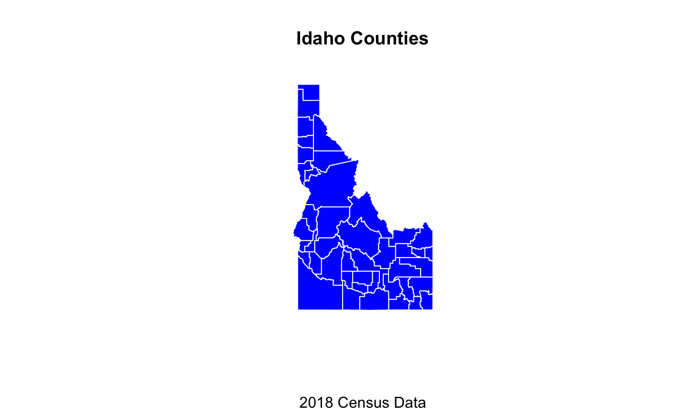
sf data in base plotplot(id.census.sf, main = "Idaho Counties", sub = "2018 Census Data",
col = "blue", border = "white")
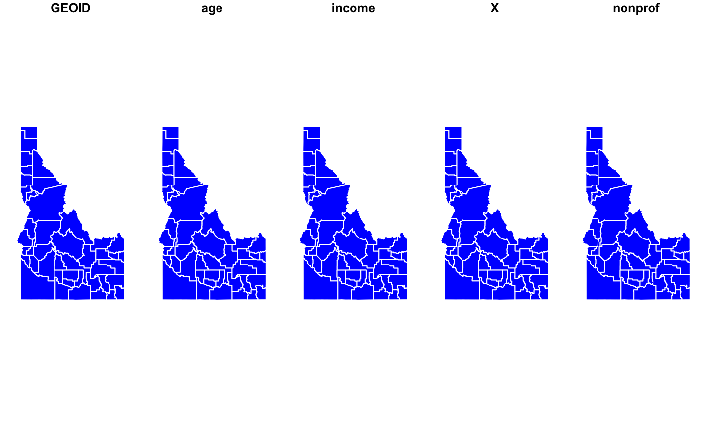
sf data in base plot# if you just want the sf geometry plot(st_geometry(id.census.sf), col = "blue", border = "white")
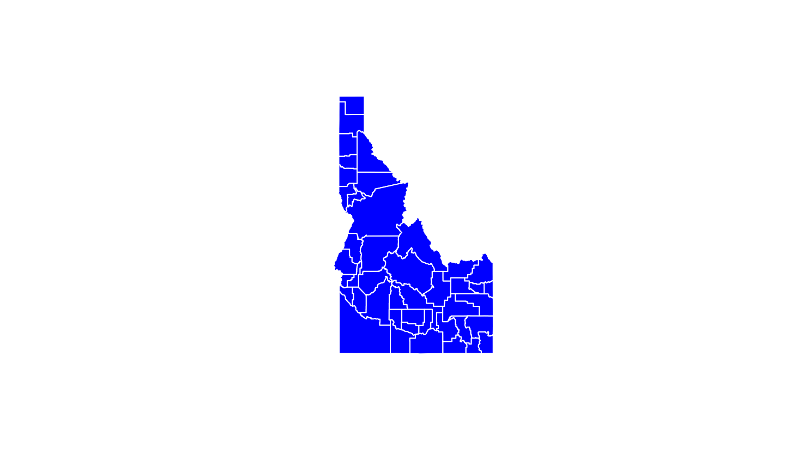
Spatial* data in base plot# hard to plot by attributes in base plot with Spatial* # objects plot(id.census.sp$income)
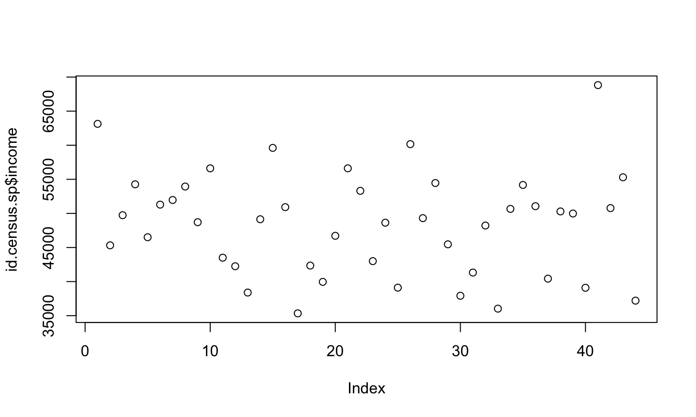
# Easier with sf
sf data in base plotplot(id.census.sf["income"], main = "Idaho Income", sub = "Median county value as of 2018")
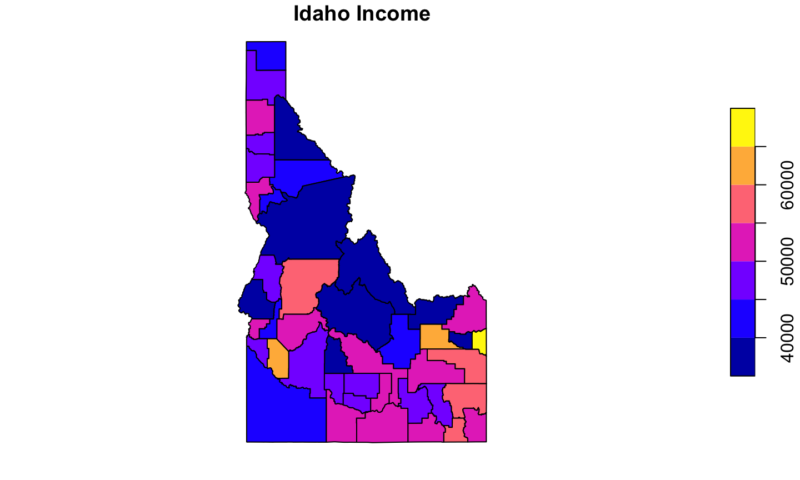
id.elev <- raster("data/id_elev.tif")
bricks in baseplot# create a reaster brick
id.terrain <- terrain(id.elev, opt = c("slope", "aspect", "TRI",
"TPI"))
plot(id.terrain)
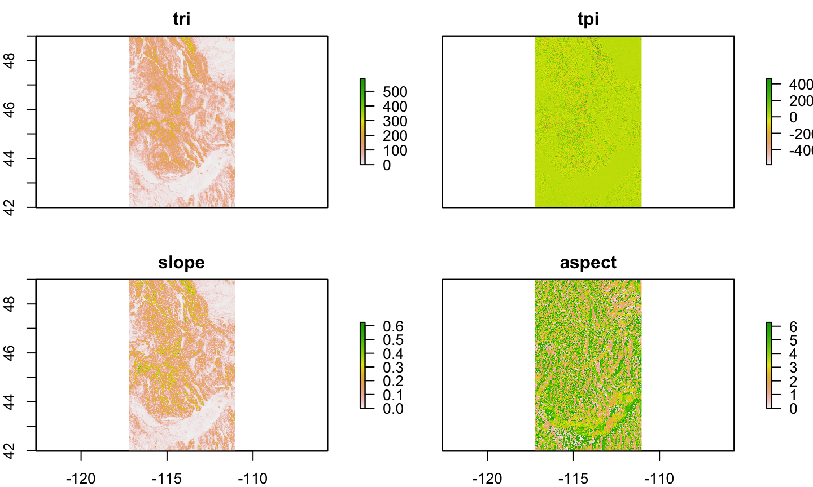
spplotspplot follows the lattice approach for creating graphics
Allows functionality for Spatial* objects similar to those for sf in base plot
# set up a color palette income.pal <- brewer.pal(n = 7, name = "Greens") spplot(id.census.sp, col.regions = income.pal, cuts = 6)
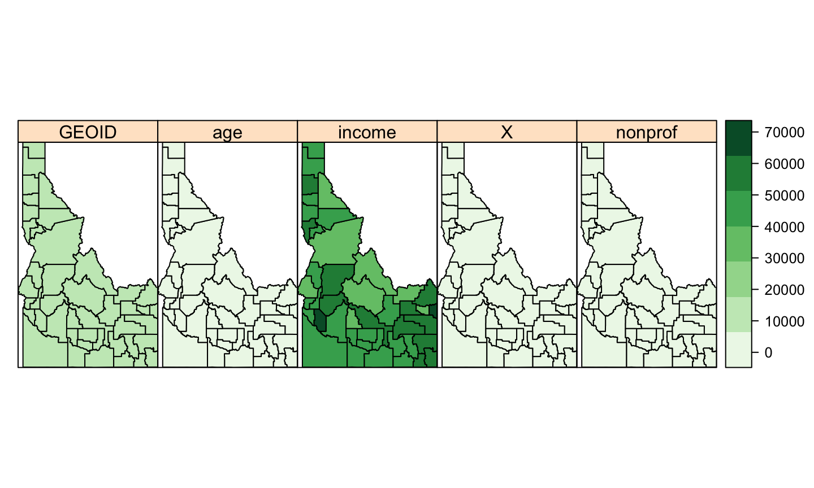
spplotspplot(id.census.sp, "income", col.regions = income.pal, cuts = 6)
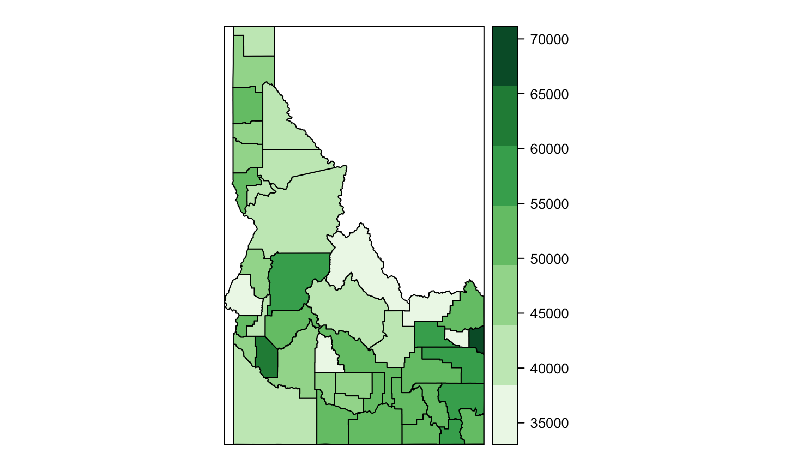
Rare that we only want to visualize one aspect of spatial data
Adding layers allows additional information and detail
Important to ask “is a map the best way to display this?”
spplotadd layers using list and sp.layout
order matters!!
spplotcounty.layer <- list("sp.polygons", id.census.sp, fill = "transparent",
col = "blue", lwd = 1.5, first = FALSE)
spplot(id.census.sp, "income", col.regions = income.pal, cuts = 6,
sp.layout = county.layer)
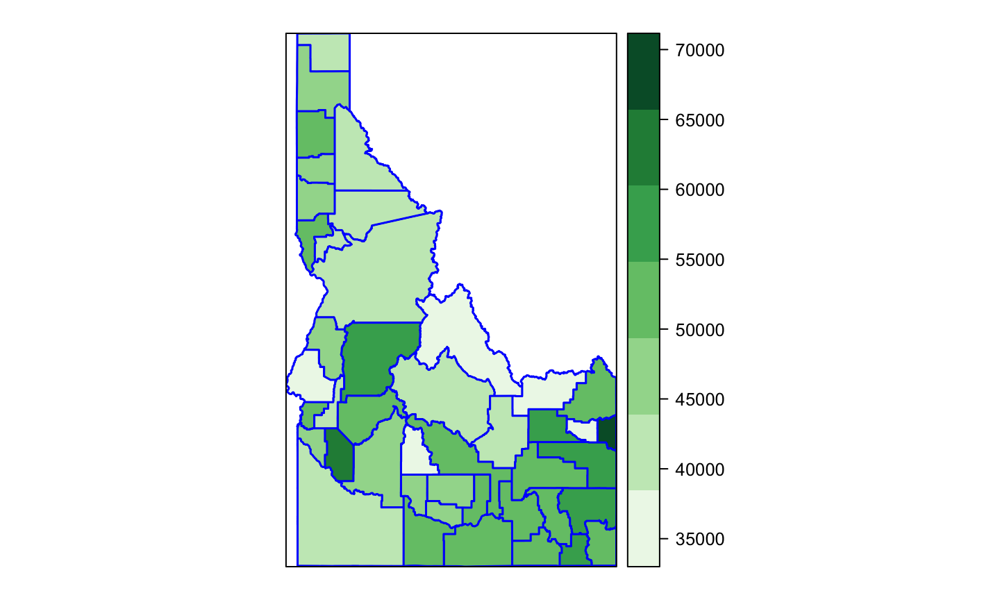
spplotspplot(id.elev, sp.layout = county.layer)
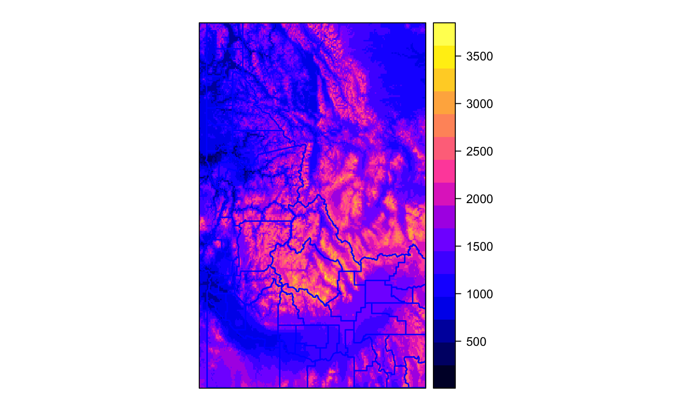
spplotspplot(id.terrain, sp.layout = county.layer)
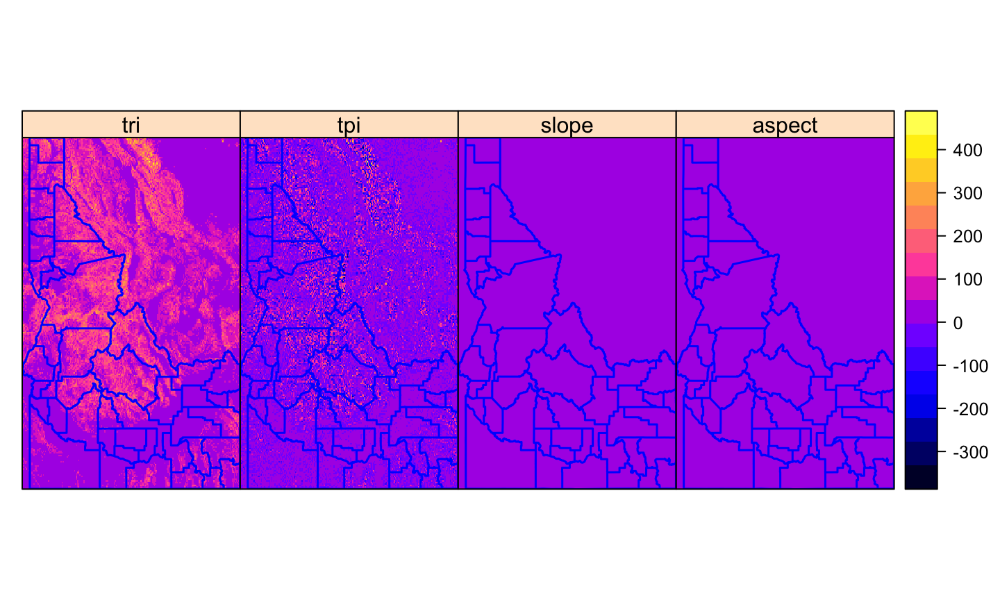
spplotYou’ll often want additional components for maps
These can also be added with sp.layout
Need to specify size and coordinates for elements
spplotid.proj <- spTransform(id.census.sp, CRS("+init=EPSG:32611")) # Can't make a scale if not projected!
id.proj@bbox # Check dimensions to help guide offset choices
## min max ## x 480643.9 993117 ## y 4649552.9 5427992
# expand bbox to make room for map elements
new.bbox <- matrix(c(480000, 1010000, 4600000, 5450000), ncol = 2,
byrow = TRUE, dimnames = list(c("x", "y"), c("min", "max")))
id.proj@bbox <- new.bbox
bbox(id.proj) #check new bbox
## min max ## x 480000 1010000 ## y 4600000 5450000
county.layer <- list("sp.polygons", id.proj, fill = "transparent",
col = "green", lwd = 1.5, first = FALSE)
scale <- list("SpatialPolygonsRescale", layout.scale.bar(), scale = 1e+05,
fill = c("transparent", "black"), offset = c(490500, 4615000),
first = FALSE)
# The scale argument sets length of bar in map units
text1 = list("sp.text", c(490500, 4604800), "0", cex = 0.5, first = FALSE)
text2 = list("sp.text", c(590500, 4604800), "100 km", cex = 0.5,
first = FALSE)
arrow = list("SpatialPolygonsRescale", layout.north.arrow(),
offset = c(980000, 5400000), scale = 60000, first = FALSE)
spplotspplot(id.proj, "income", sp.layout = list(county.layer, scale,
text1, text2, arrow))
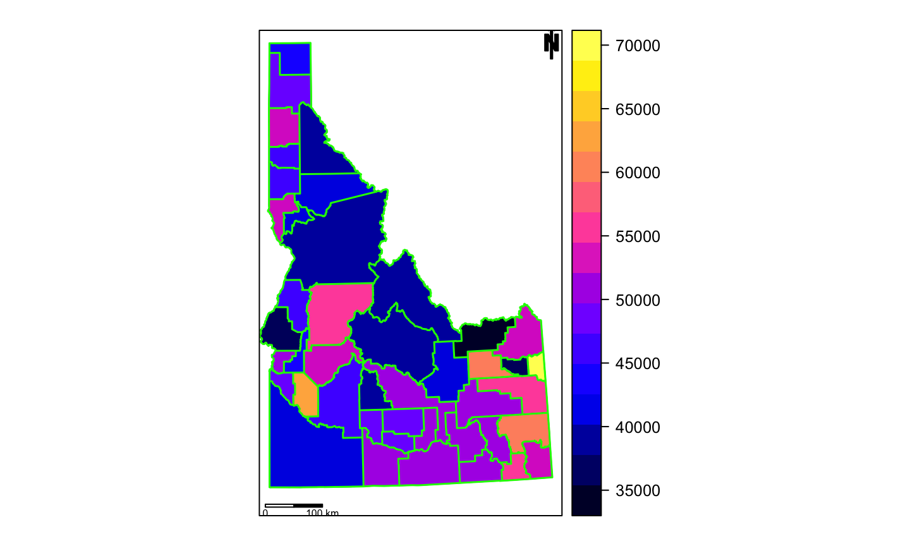
rasterViz for plotting multiple rastersrasterViz also builds on lattice approach
lots of functionality for space, time, and spacetime data
especially useful for layering rasters
rasterViz for plotting multiple rasters# build a hillshade
id.hills <- hillShade(id.terrain[[1]], id.terrain[[2]], angle = 40,
direction = 270)
hills <- levelplot(id.hills, par.settings = GrTheme())
# crop raster - make sure projections match!
elev.crop <- mask(id.elev, id.census.sp)
elev.lp <- levelplot(elev.crop)
# combine rasters
hills + elev.lp
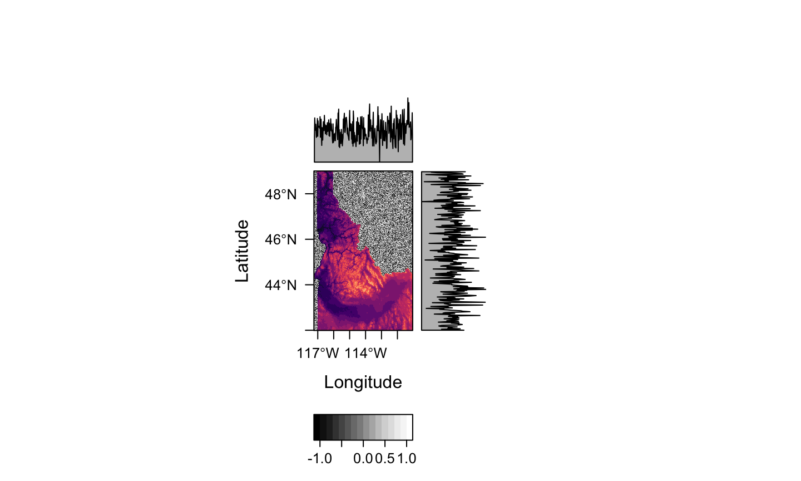
ggplot2ggplot2 built on grammer of graphics
Plots build in layers denoted by different geom_, aes, and scale_
Lots of functionality, but slow
ggplot2# get tract-level income data
tv.income.tct <- get_acs(geography = "tract", variables = "B19013_001",
state = "ID", year = 2018, geometry = TRUE) %>% filter(str_detect(NAME,
"Ada | Boise | Canyon | Gem | Owyhee"))
cty.map <- ggplot() + geom_sf(data = id.census.sf, fill = "gray")
ggplot2cty.map + geom_sf(data = tv.income.tct, aes(fill = estimate)) +
scale_color_viridis()
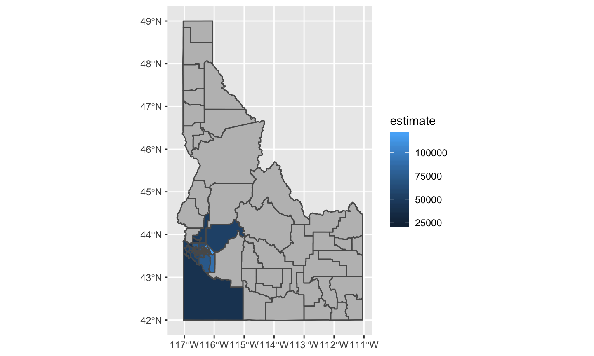
med.inc <- median(id.census.sf$income)
ggplot() + geom_point(data = id.census.sf, aes(x = income, y = reorder(GEOID,
income))) + geom_vline(xintercept = med.inc)
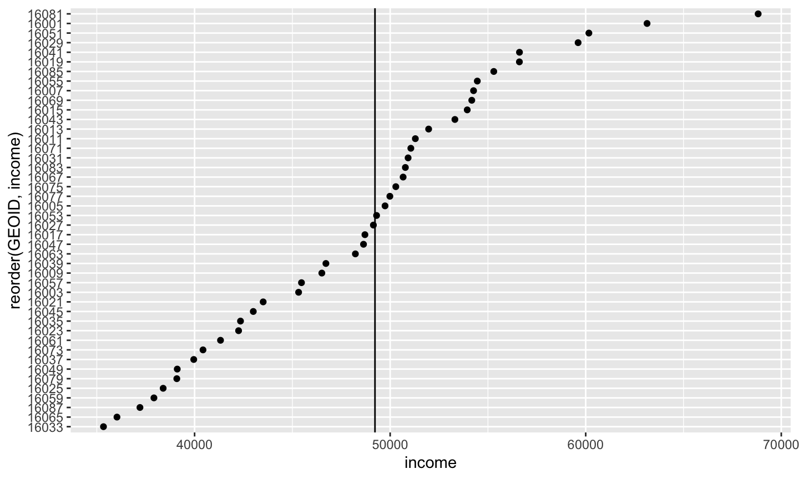
Plotting in R can be slow, we’ll explore options in “Repetitive tasks, functional programming, and bench-marking”
We will explore base-maps, multi-panel graphics, combined plots, and more complex layouts in “Next Level Visualization”
We can explore interactive and web-based maps using the leafletR and tmap packages in “Flex Dashboards, web mapping, and interactive maps”
Data Visualization: A Practical Introduction by Kieran Healy